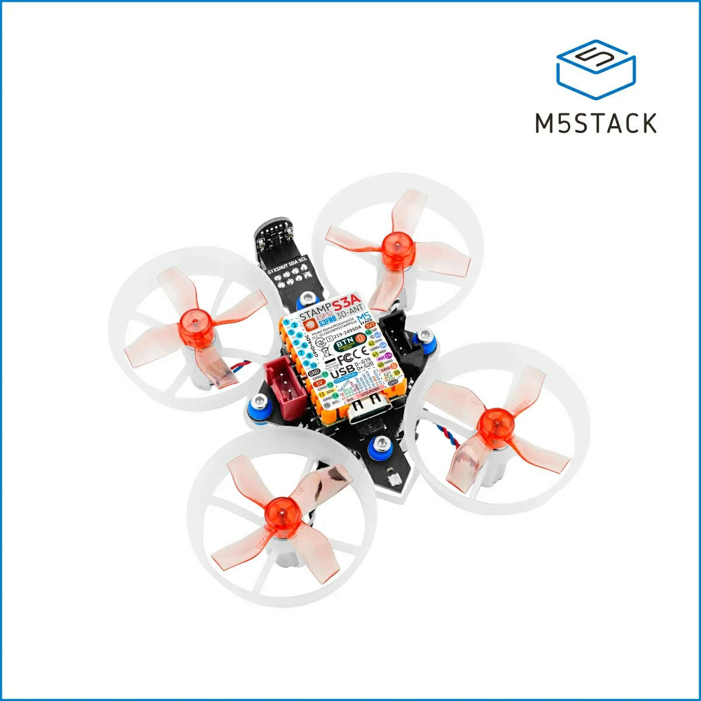
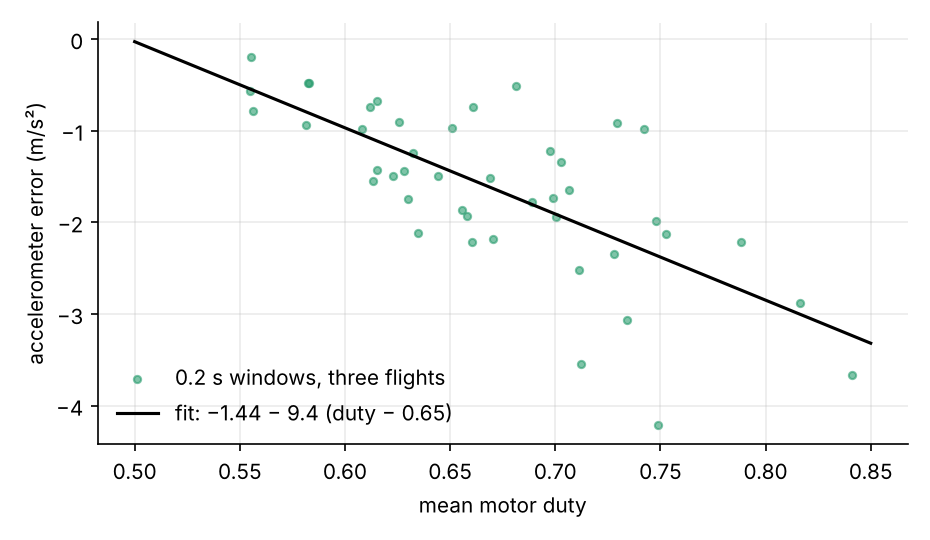
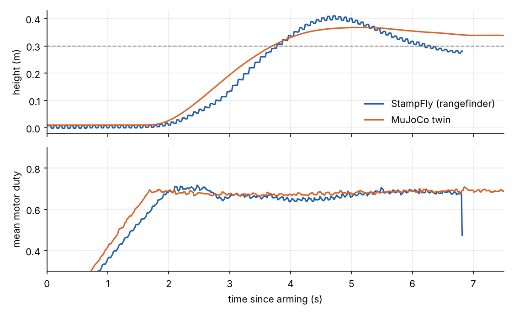

Over two days of test flights, a MuJoCo model of my M5Stack StampFly predicted the hover throttle to three decimal places, ranked candidate fixes for a take-off overshoot in the order the real drone confirmed, and chose position-hold gains that worked first time. Then it recommended altitude gains that made the real drone oscillate until a safety cut dropped it. Working out why the twin was wrong turned up a 0.3 s lag inside the rangefinder’s driver. Removing it halved the altitude wander, and the gains that had failed then flew cleanly.
This post follows on from Quadcopters: four fixed rotors, cheap sensors and the Kalman filter, which covers the physics and the estimators. Here the subject is the loop between a simulation and a physical machine: what each one tells you that the other can’t.
The setup
The StampFly is M5Stack’s 35.5 g open-source quadcopter: an ESP32-S3 controller, brushed coreless motors, a BMI270 gyroscope and accelerometer, a downward VL53L3CX time-of-flight rangefinder and a PMW3901 optical-flow sensor. Its firmware runs a 400 Hz loop with a Madgwick attitude filter, cascaded angle and rate PIDs, and a three-state Kalman filter (velocity, height, accelerometer bias) for altitude.

Two Claude sessions did the work, with me flying. One worked in VS Code with PlatformIO, changing the firmware, flashing it and running scripted test flights that log 100 Hz records to flash. The other built and ran the simulation and analysed the logs. They talked through a shared NOTES.md file in the repository: a flight log and a request went one way, a fitted model, a table of simulated cases and a recommendation came back. Each flight was a test of the previous recommendation.
Building the twin from measurements
Every parameter in the model came from a measurement, mine or someone else’s:
| Part | Value | Source |
|---|---|---|
| Mass | 35.5 g (27 g airframe, 8.5 g battery) | Weighed |
| Geometry | Motors on a 46 mm square, 30 mm props | Measured |
| Inertia | Ixx 9.16, Iyy 13.3, Izz 20.4 × 10⁻⁶ kg m² | Bifilar pendulum, M5Fly-kanazawa/stampfly_ecosystem |
| Motors and props | DC motor model with a measured drive-circuit resistance table | Bench identification, same repository |
| Battery | Open-circuit curve, 0.145 Ω + 0.06 Ω polarisation (τ 3 s) | Fitted to my flight logs, 13–16 mV rms |
| Sensors | Noise, bias, rates | Fitted to ground runs and flights |
| Firmware | Filters, PIDs, mixer, take-off ramp | Ported line by line |
The motor model integrates rotor speed from duty and battery voltage, rather than assuming thrust is proportional to duty squared:
\[ I = \frac{V - K_e\,\omega}{R_\text{out}(D)}, \qquad J\dot\omega = K_t I - C_q\omega^2 - K_t\left(I_{0a} + I_{0b}\,\omega^2\right), \qquad T = \eta\, C_t\, \omega^2 . \]
The first equation is the motor’s electrical circuit, the second is the torque balance on the rotor, and the third gives the thrust; A DC motor and propeller model derives each one. Per motor, with values from the Kanazawa bench identification:
| Symbol | Meaning | Value |
|---|---|---|
| \(D\) | PWM duty from the firmware’s mixer, 0–1 | |
| \(V\) | Battery voltage at the board | 3.3–4.3 V |
| \(\omega\), \(\dot\omega\) | Rotor speed and its rate of change | rad/s, rad/s² |
| \(I\) | Motor current; zero below 1% duty | A |
| \(K_e\) | Back-EMF constant | 5.9 × 10⁻⁴ V·s/rad |
| \(K_t\) | Torque constant (equal to \(K_e\) in SI units) | 5.9 × 10⁻⁴ N·m/A |
| \(R_\text{out}(D)\) | Effective resistance of the motor and its drive circuit, a measured table against duty | 26 Ω at 10% duty, 0.9 Ω at 90% |
| \(J\) | Moment of inertia of the rotor and propeller | 1.54 × 10⁻⁸ kg·m² |
| \(C_q\) | Propeller drag-torque coefficient: drag torque \(= C_q\omega^2\), which also yaws the body | 3.38 × 10⁻¹¹ N·m·s² |
| \(I_{0a}\), \(I_{0b}\) | No-load current, constant and speed-squared parts (bearing and brush friction) | 0.044 A, 2.9 × 10⁻⁹ A·s² |
| \(C_t\) | Propeller thrust coefficient | 7.6 × 10⁻⁹ N·s² |
| \(\eta\) | Thrust efficiency in flight relative to the bench | 0.976 |
| \(T\) | Thrust from one rotor | N |
The drive circuit’s effective resistance \(R_\text{out}(D)\) falls from 26 Ω at 10% duty to under 1 Ω at 90%, which flattens thrust against duty near hover. That turned out to matter: at duty 0.56 the drone still has 86% of its hover thrust, which explained a climb the firmware session had flagged as impossible.
The first check, with nothing tuned: the twin hovers at duty 0.693 at 3.55 V. The real drone, averaged over the steady part of flight T2_1, hovered at 0.693 at 3.56 V.
What the twin found that the drone was hiding
The early flights overshot their 0.3 m target to nearly 1 m. The logs showed the altitude filter’s velocity estimate going negative at lift-off, as if the drone were sinking while it climbed.
Comparing the logged vertical acceleration with what the motor model says the duties must produce gave the reason. The accelerometer reads low in flight, and the error grows steeply with motor speed:

That is a positive feedback loop through the estimator. More thrust makes the accelerometer read lower, so the filter thinks the drone is sinking, so the climb-rate controller adds more thrust. Vibration rectification is the likely mechanism; the raw IMU stream will tell.
With that error in the twin, five candidate fixes were simulated. Correcting the accelerometer from duty before the filter, plus setting the take-off thrust from the motor model instead of a voltage formula, cut the simulated peak from 0.72 m to 0.38 m. Lowering the altitude gains, the obvious fix, did nothing for the peak and slowed the recovery. The firmware session flashed the top pair. The next flight peaked at 0.43 m:

Position hold: calibrate on the bench, tune in the twin
The StampFly has no position hold out of the box and drifts metres in a few seconds. The optical-flow sensor measures image motion in counts. Its scale came from rocking the drone by hand over a patterned floor: during pure rotation the flow equals the rotation angle, so the gyro calibrates it. That gave 1.69 mrad per count, against the 2.22 used in the Kanazawa firmware, and a 30 cm sideways drift I saw in flight later read 0.33 m by flow.
The twin chose the gains. It also ruled out a velocity low-pass filter, whose lag destabilised the loop, and the higher gain that Kanazawa used on their own controller. By the second flight with the hold it drifted 0.13 m each way; the last flight without it had drifted 1.1 m.
The prediction that failed
To tighten the altitude hold, the twin recommended a stronger climb-rate loop (gain 0.12, integral time 0.5 s). It held ±3–4 cm in simulation and survived a 40 ms stress delay. On the drone, flight T3_2 bobbed with a 2.5 s period and growing amplitude until it crossed 0.8 m and the test cut the motors.
A twin that is wrong about stability is missing a delay or a state. The question was which one.
Predictions against outcomes
| Twin’s prediction | What the StampFly did |
|---|---|
| Hover duty 0.693 at 3.55 V, untuned | 0.693 at 3.56 V (T2_1) |
| Duty correction + motor-model take-off: peak 0.72 → 0.38 m | about 1.0 → 0.43 m (T2_2 → T2_3) |
| 7% take-off thrust error on a part-charged pack: peak 0.72 m | 0.69 m (T2_5) |
| Velocity hold: metres of drift down to tens of centimetres | 1.1 m → 0.13 m (T2_4 → T2_6) |
| Climb-rate gain 0.12 / 0.5 s is stable | Wrong: growing 2.5 s oscillation (T3_2) |
| With the driver’s 6-frame merge: oscillation, period ~2.8 s | T3_2: ~2.5–2.7 s |
| Merge off, same gains: 2.4–3.3 cm std, 0.65 m peak | 4.6 cm std, 0.65 m peak (T3_5) |
The twin runs slightly optimistic on altitude wander throughout, by about 1–2 cm. Some unmodelled disturbance is still missing.
What the loop taught
The successes were mostly about ranking. The twin didn’t have to be exact to say that correcting the accelerometer would beat lowering the gains, or that a velocity filter would hurt. It only had to contain the mechanisms that mattered.
The failure was more instructive. A model only reproduces behaviour it has the states and delays to produce. In Ashby’s terms, it needs the variety of the system it regulates. The twin had no rangefinder latency, so no amount of tuning inside it could have predicted T3_2. The real drone’s disagreement was the measurement that added that state. The comparison of the two found the fault; neither would have found it alone.
There is still a gap to close. The same logs show each rangefinder read blocking the control loop for about 5 ms, so the “400 Hz” loop averages 336 Hz. Moving the read into a separate task on the ESP32-S3’s other core is next. Then the twin goes up a size: a 3D-printed, brushless 3-inch quad sized from motor bench data, with the same firmware and sensors.
The physical model’s inertia and motor constants are from Kouhei Ito’s stampfly_ecosystem (MIT licence). Simulation in MuJoCo. See also the Kalman filter explainer.